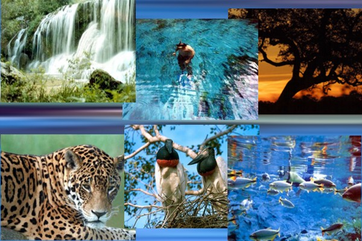

PANTANAL: CONFIRA UMA DAS MAIORES RESERVAS NATURAIS DO PLANETA
O Complexo do Pantanal, ou simplesmente Pantanal, é um bioma constituído principalmente por uma savana estépica,
alagada em sua maior parte, com 250 mil km² de extensão, altitude média de 100 metros,1 situado no sul de Mato Grosso
e no noroeste de Mato Grosso do Sul, ambos Estados do Brasil, além de também englobar o norte do Paraguai e leste da Bolívia
(que é chamado de chaco boliviano), considerado pela UNESCO Patrimônio Natural Mundial e Reserva da Biosfera,
localizado na região do Parque Nacional do Pantanal. Em que pese o nome, há um reduzido número de áreas pantanosas na região pantaneira.
Além disso, tem poucas montanhas, o que facilita o alagamento.
O Pantanal é uma das maiores extensões (alagadas) contínuas do planeta e está localizado no centro da América do Sul,
na bacia hidrográfica do Alto Paraguai. Sua área é de 150.000 km², com 65% de seu território no estado de Mato Grosso do Sul e 35% no Mato Grosso.
O rio Paraguai passa pela cidade de Cáceres, Mato Grosso, onde é conhecida como "Princesinha do Rio Paraguai" e seus afluentes
percorrem o Pantanal, formando extensas áreas inundadas que servem de abrigo para muitos peixes, como o pintado, o dourado, o pacu,
e também para outros animais, como os jacarés, as capivaras e ariranhas, entre outras espécies.
Muitos animais ameaçados de extinção em outras partes do Brasil ainda possuem populações vigorosas na região pantaneira, como o cervo-do-pantanal,
a capivara, o tuiuiú e o jacaré.
